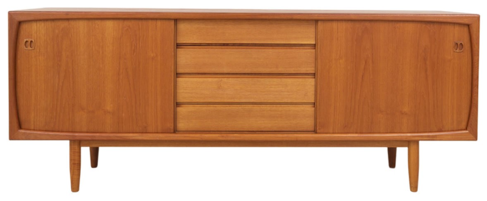
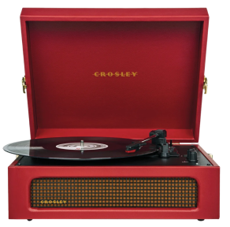
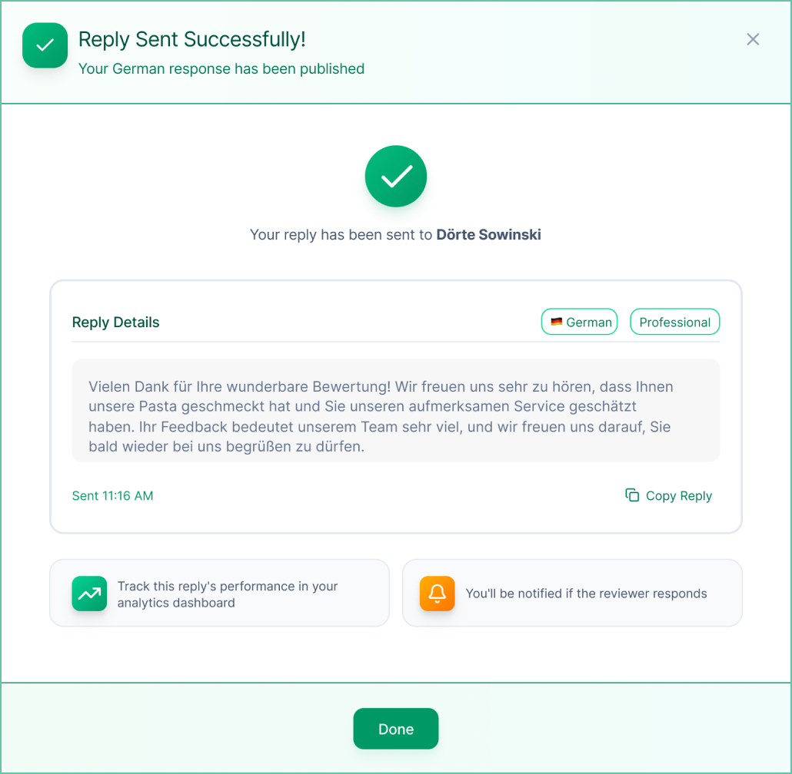
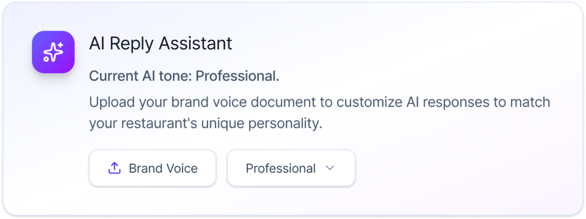
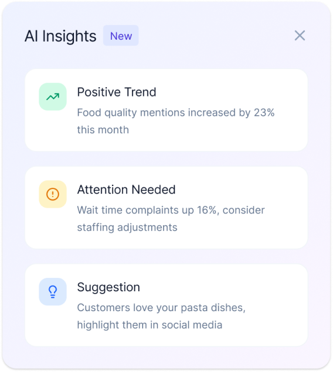
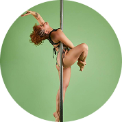
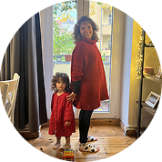

I'm from Colombia, lived 13 years in Argentina.
Based in Berlin



Hola! I'm Carol Munar.
I help startups and series A—D teams to establish a strong connection between their product and customers
SELECTED WORK



Empowering Local Business to improve their reputation with AI
Complex B2B SaaS is where I do my best work. Onboarding flows that take hours, AI features nobody knows how to design yet, workflows that make sense to engineers but nobody else. I turn that complexity into products people actually use.
I embed in cross-functional teams and build trust fast. I've worked alongside engineers, PMs, sales, and C-level stakeholders, sometimes all in the same week. I push back when needed, align when it matters, and always bring the user back into the room.
I've worked as a founding designer at early-stage startups and as part of large design organizations and shipping products from 0 to 1. I'm good at building cross-functional relationships and turning technical complexity into intuitive experiences.

